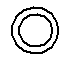

Layers tab (Save As Flat DXF Options dialog box)
- Solid Edge Features
-
Lists the Solid Edge sheet metal features that you can export to the AutoCAD document. The features you can export include:
- Up/Down Centerline
-
The centerline of a face that is bent up or down.
- Up/Down Features
-
Any dimple, louver, drawn cutout, or bead feature found on an up or down face in the sheet metal file.
- Outer Loop
-
The outer most profile in the sheet metal part when viewed from a top view of the flat pattern.
- Interior Loop
-
All closed shapes defined within the outer loop in a sheet metal part except for those that are created by dimples, louvers, drawn cutouts, or bead features.
- Complex Holes
-
Counter bores, counter sinks, tapered, and threaded holes.
When a complex hole is output to a drawing or exported to AutoCAD, it is represented by two circle elements when viewed from a top view.

When you export a complex hole to AutoCAD, the outer loop that represents a thread or counterbore is placed on the complex hole layer. The interior loop of a thread or counterbore is placed on the interior loop collection.
- Index Marks
-
The index marks which indicate the bend location when you save a lofted flange as a flat pattern.
- Down Etch
-
All etches created on the down face relative to the stationary face identified when saving the sheet metal part to a flat.
- Up Etch
-
All etches created on the up face relative to the stationary face identified when saving the sheet metal part to a flat.
- DXF Layer Names
-
Specifies the name of the layer in the AutoCAD file on which you will place the Solid Edge features. You can edit the values in this column to change the layer name.
- DXF Line Types
-
Specifies the line type used in the AutoCAD file to represent the Solid Edge features. You can use the dropdown arrow to display a predefined list of line types that are used in Solid Edge and AutoCAD.
- DXF Line Type Names
-
Specifies the name you want to associate with the selected line type. You can edit the values in this column to change the line type name.
- DXF Colors
-
Specifies the color used in the AutoCAD file to represent the Solid Edge features. You can use the dropdown arrow to display a list of available colors.
- DXF Layer Display
-
Controls whether or not the selected layers are displayed in the AutoCAD file.
- DXF Layer Lock
-
Controls whether or not the selected layers are locked in the AutoCAD file.
- Export to DXF
-
Specifies whether or not the selected feature will be exported to the AutoCAD file.
How do I
Construct a flat pattern in the sheet metal part documentApply a patch to relief in a flat pattern
Save and flatten a sheet metal part
Learn more
Flattening sheet metal partsCreating flat pattern drawings
Look up more details
Flat Pattern commandFlat Pattern command bar
Flat Pattern command bar
Flat Pattern Options dialog box
Relief Patch command
Relief Patch command bar
Save As Flat command
Save as Flat command bar
Save As Flat dialog box
Save As Flat DXF Options dialog box
Bend Data tab (Save As Flat DXF Options dialog box)
Font Mapping tab (Save As Flat DXF Options dialog box)